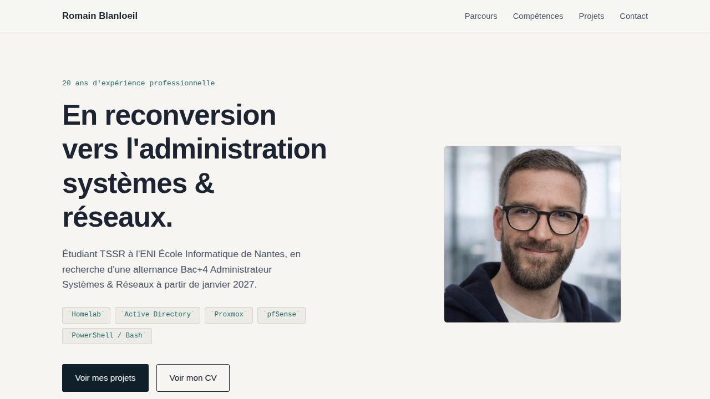

Projet
Le site que vous êtes en train de consulter — conçu et codé from scratch, sans framework, pour rester simple à maintenir pendant la reconversion.
En reconversion vers l'administration systèmes & réseaux, il fallait un support pour présenter ce parcours à des recruteurs : le contraste entre 20 ans dans le soin et une nouvelle orientation technique, les compétences en cours d'acquisition, et les projets personnels construits en autonomie (homelab, développement).
Le choix s'est porté sur un site fait maison plutôt qu'un template ou un générateur, pour garder la main sur chaque détail et éviter le rendu générique de nombreux portfolios.
Construire un design distinctif sans framework ni bibliothèque de composants demande de faire des choix explicites à chaque étape plutôt que d'hériter de défauts tout faits : palette, typographie, densité, layout.
Le menu mobile est un exemple concret de contrainte technique : obtenir un panneau de navigation animé (ouverture/fermeture, icône burger qui se transforme en croix) sans JavaScript, uniquement avec une case à cocher cachée et des sélecteurs CSS (:checked ~).
Un site en ligne, qui évolue au fil de la formation TSSR et sert de document vivant pour les candidatures en alternance.